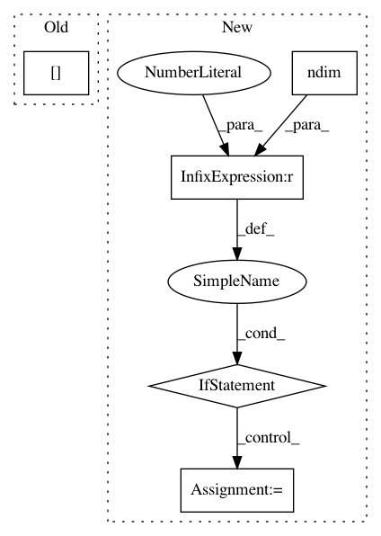

8b3543fca9d811c638bb72d78601c8564f5465fd,keras/backend/tensorflow_backend.py,,batch_dot,#Any#Any#Any#,127
Before Change
def batch_dot(x, y, axes=None):
if axes:
adj_x = None if axes[0][0] == ndim(x) - 1 else True
adj_y = True if axes[1][0] == ndim(y) - 1 else None
else:
adj_x = None
adj_y = None
After Change
adj_x = None
adj_y = None
out = tf.batch_matmul(x, y, adj_x=adj_x, adj_y=adj_y)
if ndim(out) == 1:
out = expand_dims(out, 1)
return out
def transpose(x):
In pattern: SUPERPATTERN
Frequency: 3
Non-data size: 5
Instances
Project Name: keras-team/keras
Commit Name: 8b3543fca9d811c638bb72d78601c8564f5465fd
Time: 2016-04-03
Author: EderSantana@users.noreply.github.com
File Name: keras/backend/tensorflow_backend.py
Class Name:
Method Name: batch_dot
Project Name: scikit-multiflow/scikit-multiflow
Commit Name: b3ceddd0b4d21f32e55dd4126300973c6a732e63
Time: 2020-04-22
Author: saulomastelini@gmail.com
File Name: src/skmultiflow/trees/attribute_observer/numeric_attribute_regression_observer.py
Class Name: NumericAttributeRegressionObserver
Method Name: get_best_evaluated_split_suggestion
Project Name: dmlc/dgl
Commit Name: deb653f8dc9b396ba99d5c66e0658fb056f37a38
Time: 2018-11-22
Author: ly979@nyu.edu
File Name: python/dgl/function/message.py
Class Name: SrcMulEdgeMessageFunction
Method Name: __call__